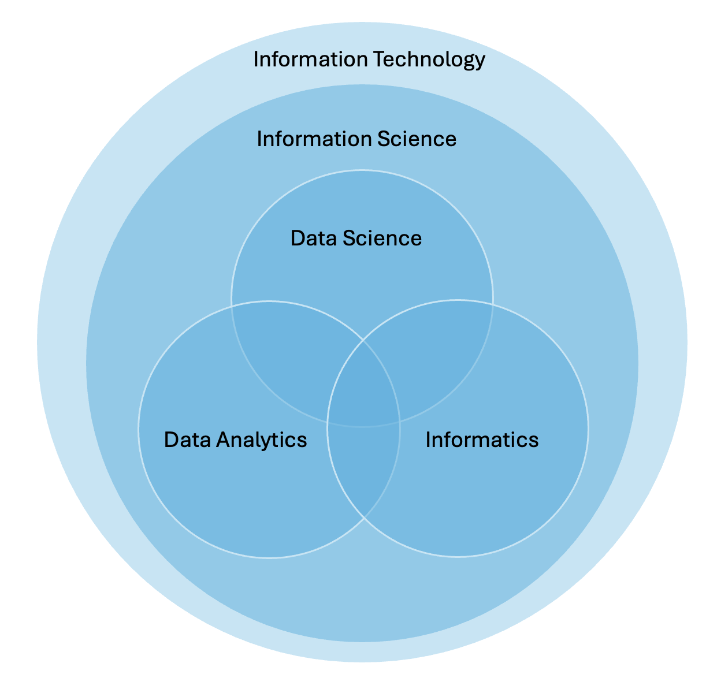
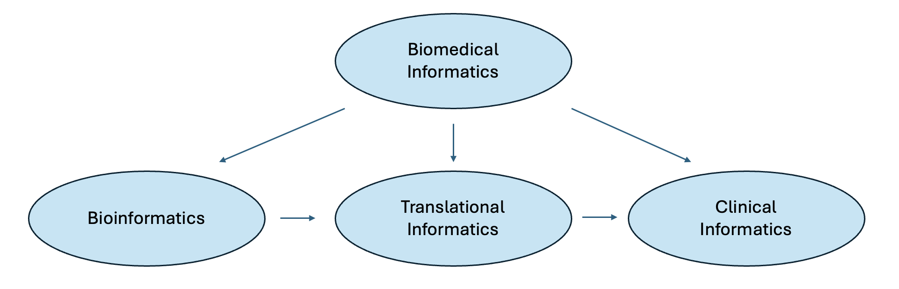
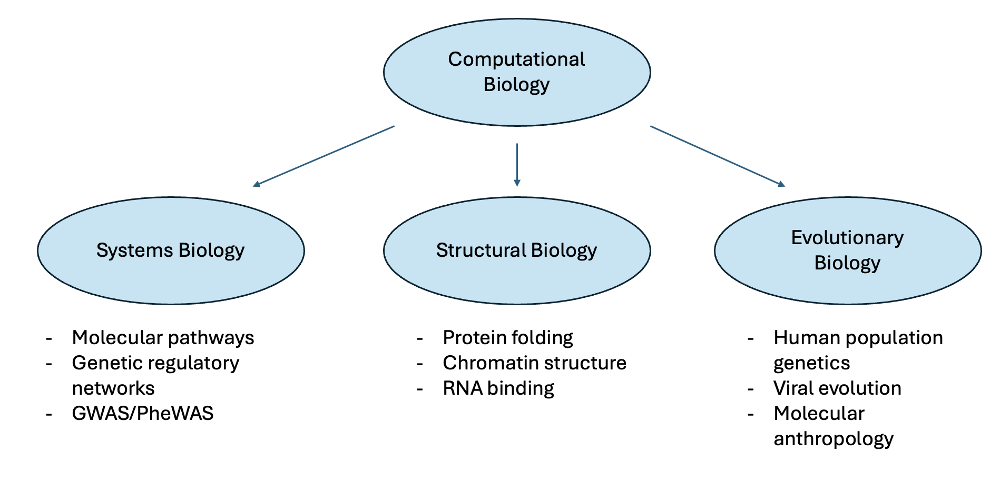
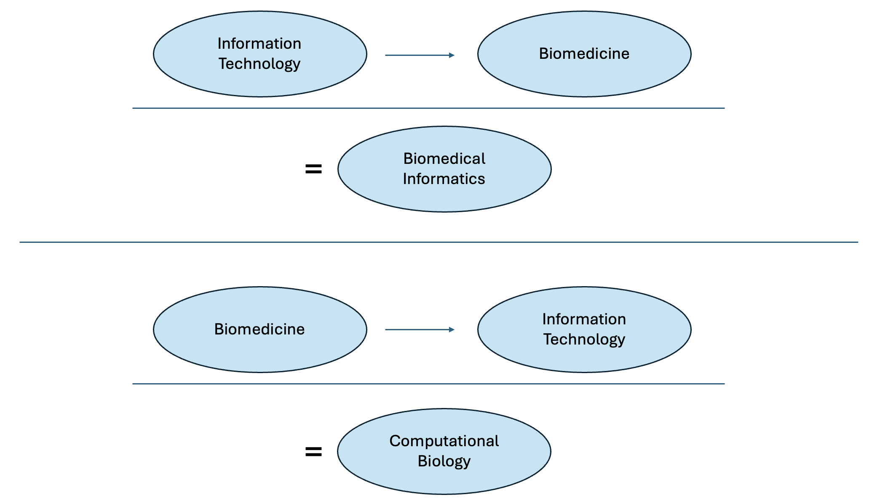
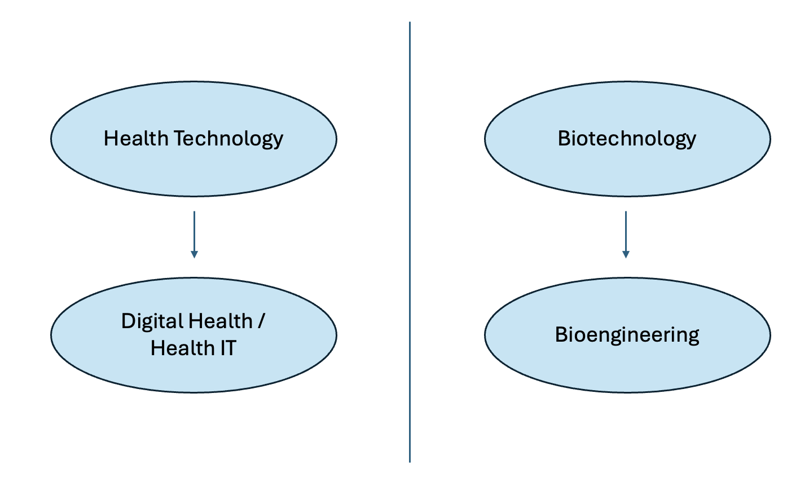

Welcome back to another week of [VS]Codes! In today’s post, I will be summarizing my personal definitions and interpretations of the various subdisciplines in biomedical data science. Given my prior background and experience in this subject area, I figured that writing this post would be an easy task! However, referencing the literature further made me realize that the boundaries across the subfields of health technology are fairly nebulous. Different departments, organizations, and individuals all have their own opinions of what their work involves. Dr. Bill Hersh from Oregon Health and Science University has a great paper (all the way back from 2009!) on the need to converge on consistent terminology in the field of biomedical informatics: you can give it a read here.
Given the lack of clarity in the subfields of biomedical data science, my goal today will be to provide my personal interpretation of the breakdown of relevant fields, informed by some of the definitions I’ve collated from external references. This description is absolutely meant to be a first draft of sorts (hence the v0 in the title)… I aim to refine these terms further based on additional input down the road.
My Priors
One of my sources of inspiration for this post comes from a rotation mentor of mine during my PhD, Dr. Ryan Urbanowicz. Ryan is an outstanding educator and has released several useful educational resources related to data science and machine learning in the past (for instance, his video series on Machine Learning Essentials for Biomedical Data Science). In my first year of graduate school, I found his Venn diagram of data science terms gave me a lot of clarity as I was starting off - you can refer to his original tweet here. My hope is that this post will provide a similar degree of intuition to those entering the field.

Another source of inspiration for my definitions comes from the description of my graduate program at the University of Pennsylvania - the “Genomics and Computational Biology” (GCB) graduate group. Here are some snippets from the program’s website that I found relevant to today’s discussion:
“GCB accomplishes its training goals by administering a comprehensive training program that gives students a broad foundation in the biological and quantitative sciences along with practical experience in computational genomics, experimental genomics, or biomedical informatics.”
“These disciplines take a holistic approach to ask about the origins, functions, and interactions of whole systems, using both experimental and theoretical work.”
“The synthesis and integration of biology, computer science, mathematics, statistics, and engineering requires a new generation of scientists that thrives in cross-disciplinary research. This can include molecular, cellular, and organismal biology (including genetics), mathematics, statistics, chemistry, and engineering.”
“As examples of areas of study one might explore: (a) Complex disease mapping, human genetic variation, and evolution of populations, (b) Genome-scale functional analysis of RNA, protein, and pathways, (c) Biophysical models of molecules and their interactions, (d) Design of novel experimental systems using microfluidics, nano-fabrication, and optics, (e) Development of computational algorithms for genome-scale data, (f) Construction of computational pipelines and software engineering of analysis systems, (g) System-level modeling of cell processes and organismal development, (h) Evolutionary dynamics of genomes, transcriptomes, pathways, and organisms”
“[Our] mission … is to train the next generation of quantitative scientists with an integrated and deep understanding of the biological basis of health and disease.
Based on these pieces of information, it is evident that biomedical data science is made up of multiple interdisciplinary, overlapping fields. So, the terms that I define today should not be taken as ground truths - a lot of things are open to personal interpretation.
With all this context out of the way, let’s jump into my personal definitions - I’ll start with terms related to information and data, then explore the distinctions between biomedical informatics and computational biology, and finally conclude with a summary of health tech and biotech.
Definitions
Information and Data
Information Technology (IT)
Information technology (IT) refers to the use of computer systems to manage, process, protect, and exchange information. The overarching goal among its specializations is to use technology systems to solve problems and handle information. [5]
Information Science
Information science is the theoretical study of how information is created, organized, managed, stored, retrieved, and used. It is an interdisciplinary field that combines aspects of computer science and information management. [6]
Informatics
Informatics refers to the use and implementation of technology systems to analyze and manage information. Its primary focus is its application to specific external domains “for the good of people, organizations, and society”. [7, 8]
Data Science
Data science refers the study of data to extract meaningful insights and acquire knowledge. It is an interdisciplinary field that combines principles from a broad range of fields, including mathematics, statistics, artificial intelligence, and computer engineering, to collect, process, and analyze large amounts of data. There is a stronger focus on predictive modeling and algorithmic design. [9, 10, 11]
Data Analytics
Data analysis involves the analysis and examination of large amounts of data to better understand trends in the system being studied. There is a stronger focus on developing tables, visualizations, and overarching products to comprehend the data. [12]
Based on the above definitions, I visualize the interplay of information and data as follows:

Information technology serves as the overarching guidebook for computational work. Within IT, information science dictates the way that we collect, store, organize, and manage our data. And finally, under both information technology and information science, data science, data analytics, and informatics intersect with one another, allowing for the development of predictive models and the analysis of data for applications to external domains.
Biomedical Informatics and Computational Biology
Biomedicine
Biomedicine and the biomedical sciences refer to a set of sciences that apply understandings of biology and the natural sciences to develop knowledge, interventions, or technology that are of use in healthcare or public health. [13]
Biomedical Informatics
Biomedical Informatics
Biomedical informatics is an interdisciplinary field seeking to study and advance the use of biomedical data to improve individual health, public health, and healthcare. It investigates, simulates, experiments with and translates a wide swath of biological systems to connect basic and clinical research with practical application for the overall betterment of healthcare. [17, 18, 19]
Bioinformatics
Bioinformatics, the application of biomedical informatics in cellular and molecular biology (often with a focus on genomics), is a scientific subdiscipline that involves using computer technology to collect, store, analyze, and disseminate biological data and information, such as DNA and amino acid sequences or annotations about those sequences, to increase our understanding of health and disease. [19, 20]
Translational Informatics
Translational informatics, the application of biomedical informatics to human health, is focused on the study and application of existing biomedical data to bridge new ways to improve diagnosis, staging, prognosis, and treatment of human disease. [19, 21]
Clinical Informatics
Clinical informatics, the subdiscipline of biomedical informatics related to patient data (typically from electronic medical records), focuses on the application of informatics to specific clinical subdisciplines, such as healthcare, nursing, dentistry, and pathology. [19, 22]
The subfields of biomedical informatics can be represented in the following hierarchy:

Bioinformatics is focused on processing the core data of biological systems, translational informatics is focused on the translation from biology to medicine, and clinical informatics is focused on the analysis of medical and healthcare data.
Computational Biology
Computational Biology
Computational biology refers to the use of mathematics, statistics, and algorithms to understand biological systems based on data from experimental measurements. Examples of biological questions that may be tackled include what:
biological tasks are carried out by particular nucleic acid or peptide sequences
which gene (or genes) when expressed produce a particular phenotype or behavior
what sequence of changes in gene or protein expression or localization lead to a particular disease
how do changes in cell organization influence cell behavior. [23]
Computational Genomics
Genomics is a subfield of biomedicine focused on studying the entire set of DNA of an organism. Genomics research involves identifying and characterizing all the genes and functional elements in an organism’s genome as well as how they interact. [14, 15] Computational genomics refers to the use of computational and statistical analysis to decipher biology from genome sequences and related data, including both DNA and RNA sequence as well as other “post-genomic” data. [24]
The following figure shows some of the subfields of biology that can be addressed through computation. Computational genomics could be utilized in all three cases.

Differentiating biomedical informatics and computational biology
Biomedical informatics and computational biology are very similar terms to one another - both involve the interdisciplinary application of information technology to biomedicine. The key differentiators I see between the two terms are the order of prioritization in disciplines and the nature of the data under consideration.
In biomedical informatics, the focus is on the development computational infrastructure and analysis to handle large-scale biomedical data.
On the other hand, computational biology starts with the focus on a biological experiment. From a biological question, corresponding data are generated, and computational analyses are applied.
Indeed, I see the second word in each phrase as the “order of operations”: biomedical informatics is centered on the informatics, and computational biology is centered on the biology.

Health Technology and Biotechnology
Health Technology
Health technology, or “health tech,” refers to the use of technologies developed for the purpose of improving any and all aspects of the healthcare system. It is focused primarily on the development of healthcare products and services. [25]
Health Information Technology
Health information technology (health IT) involves the processing, storage, and exchange of health information in an electronic environment. Applications include enhancing the quality of healthcare, preventing medical errors, reducing healthcare costs, and expanding access to healthcare. [26]
Biotechnology
Biotechnology (biotech) involves the use of living organisms and/or biological systems to develop or create different products [27].
Bioengineering
Bioengineering involves the application of engineering principles in combination with living organisms and/or biological systems to develop or create different products. These solutions may take the form of devices or computer programs (e.g., simulation of biomedical processes). However, the focus is on the biomedical problem to be solved, not data, information or knowledge. [28]
Digital Health
Digital health refers to the use of information and communications technologies in medicine and other health professions to manage illnesses and health risks and to promote wellness. [29]
I see health technology and biotechnology as synonymous fields to one another, with health tech focused more on advancing human healthcare and biotech focused more on the use of biological systems. The incorporation of IT into health technology yields digital health and health IT, while the incorporation of engineering into biotechnology yields bioengineering.

Conclusions
Data science, data analytics, and informatics can be thought of as complementary terms to one another. On the whole, these terms can pretty much be used interchangeably. However, the real nuance is that data science is focused primarily on the development of models and algorithms, data analytics is focused on data tabulation and visualization, and informatics is focused on the application of data analysis to external sub-domains.
Computational Biology and Biomedical Informatics are fairly interchangeable - however, I like to think that computational biology prioritizes the impact of the biological question, while biomedical informatics prioritizes the computational systems needed to analyze large-scale biomedical data.
Health tech and biotech are parallel industries that both involve information technology and biomedicine, with an emphasis on human healthcare in the former and biological systems in the latter.
Based on these definitions, here is how I would define my own work:
In my PhD, I pursued computational biology research, with an emphasis on computational systems biology. I made use of both biomedical informatics and computational genomics methods in my work. My biomedical informatics research included both bioinformatics and translational informatics, and my computational methods included informatics, data science, and data analysis.
Now, as a data scientist at the Fred Hutchinson Cancer Center, my work is centered more broadly on biomedical data science, with an emphasis on the translational and clinical informatics subfields of biomedical informatics. My computational methods included informatics, data science, and data analysis. I have a more explicit focus on health IT/digital health now too.
Hopefully, today’s post has given you a relatively clear summary of the nuances in biomedical data science. In future posts, I will refine on these definitions and dive deeper into more of the terms described today. Until next week!
References
- https://bmcmedinformdecismak.biomedcentral.com/articles/10.1186/1472-6947-9-24
- https://x.com/DocUrbs/status/1007375834347376642/photo/1
- https://dmice.ohsu.edu/hersh/whatis/
- https://dmice.ohsu.edu/hersh/whatis/WhatIs01.pdf
- https://www.coursera.org/articles/what-is-information-technology#
- https://www.si.umich.edu/student-experience/what-information-science
- https://ischool.uw.edu/programs/informatics/what-is-informatics
- http://nces.ed.gov/ipeds/cipcode/cipdetail.aspx?y=55&cipid=89325
- https://aws.amazon.com/what-is/data-science/
- https://www.ibm.com/topics/data-science
- https://www.nnlm.gov/guides/data-glossary/data-science
- https://graduate.northeastern.edu/resources/data-analytics-vs-data-science/
- https://en.wikipedia.org/wiki/Biomedical_sciences#cite_note-1
- https://www.genome.gov/genetics-glossary/genomics
- https://www.illumina.com/techniques/multiomics.html
- https://irp.nih.gov/catalyst/19/6/systems-biology-as-defined-by-nih
- https://dmice.ohsu.edu/hersh/whatis/WhatIs01.pdf
- https://www.usfhealthonline.com/resources/health-informatics/biomedical-informatics/
- https://www.ohsu.edu/school-of-medicine/medical-informatics-and-clinical-epidemiology/what-biomedical-informatics
- https://www.genome.gov/genetics-glossary/Bioinformatics
- https://bmir.stanford.edu/research-groups/translational-informatics.html
- https://www.usfhealthonline.com/resources/health-informatics/biomedical-informatics/
- https://cbd.cmu.edu/about-us/what-is-computational-biology.html
- https://en.wikipedia.org/wiki/Computational_genomics
- https://builtin.com/healthcare-technology
- https://www.hhs.gov/hipaa/for-professionals/special-topics/health-information-technology/index.html
- https://www.ntnu.edu/ibt/about-us/what-is-biotechnology
- https://www.ncbi.nlm.nih.gov/pmc/articles/PMC2814957/
- https://www.ncbi.nlm.nih.gov/books/NBK470260/